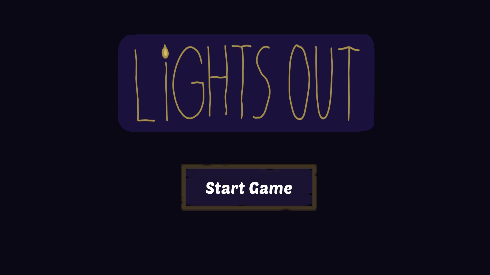
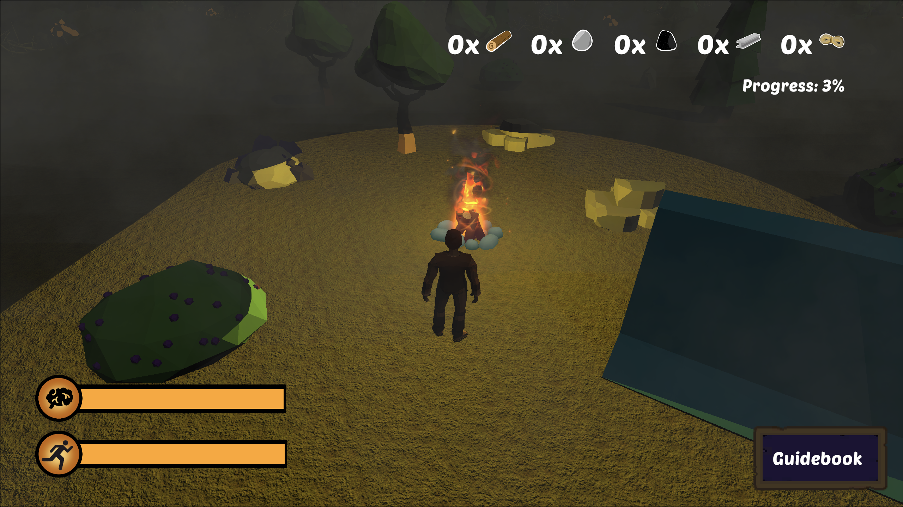
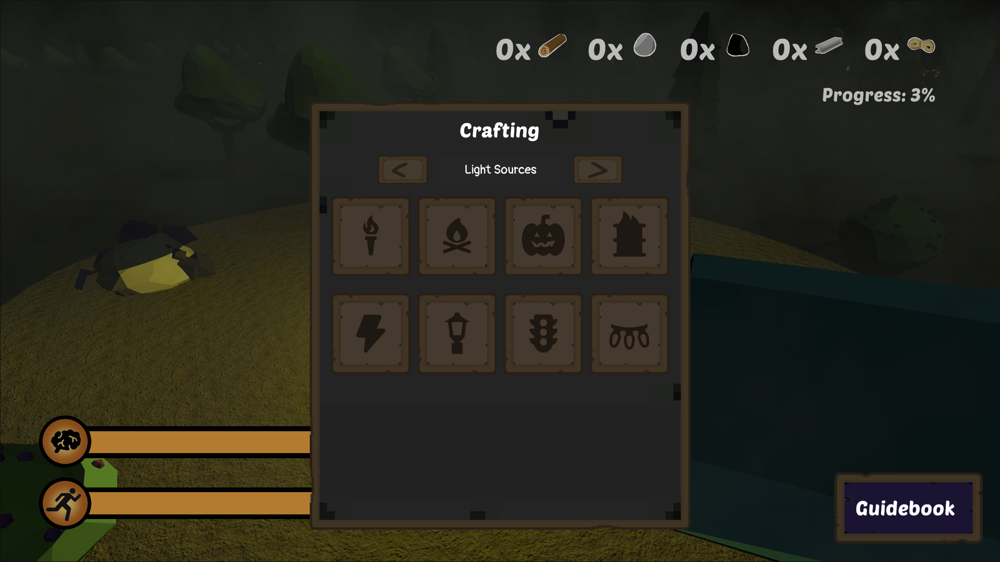
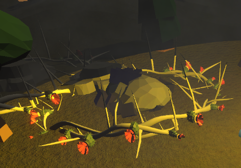
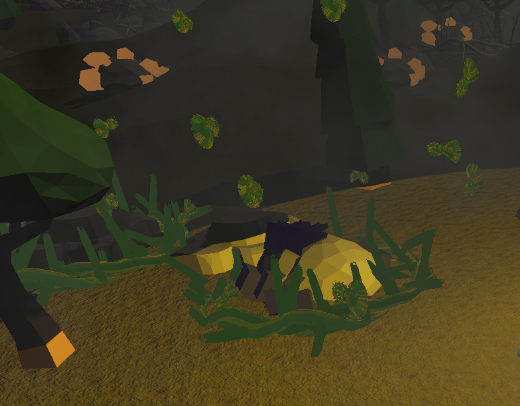

All work
Game design document
Lights Out
A Survival-Crafting Game in the Eternal Darkness
Overview
- Role
- Game Developer
- Duration
- Semester 2, 2024
- Institution
- University of Melbourne
- Course
- COMP30019 – Graphics and Interaction
- Engine
- Unity with WebGL
- Tools
- Unity, C#, Git, Jira, Confluence, Discord
- Team
-
- Sakdiphat Tanphiphatari
- Acalapati Priyatama
- Don Lam Nguyen
- Duc Hang Giang Vu
1.0
About this game
- Genre
- Survival-Crafting with Eerie Atmosphere
- Setting
- A perpetual nighttime forest where darkness drains your sanity
- Main Goal
- Light up the entire map to escape the darkness
- Core Loop
-
- Gather resources
- Craft light sources
- Expand your safe zone
- Maintain sanity
- Repeat
- Key Mechanic
- Darkness drains sanity but light prevents it. Players must balance exploration and crafting to survive.
- Art Style
- Low-poly 3D with a dark, haunting aesthetic inspired by Don't Starve and Darkwood
2.0
Core gameplay
What the player does
In Lights Out, you play as Adam, a stressed office worker who wakes up to find his camping trip has become a nightmare, the world is locked in eternal darkness. Your only tool for survival is your campfire and your wits. Explore the darkness, gather resources, and craft increasingly powerful light sources to push back the shadows. Manage your sanity meter carefully; spend too long in the dark and you'll lose your mind. Build structures for comfort and safety, expand your illuminated territory, and uncover what's really happening in this cursed place.
- Exploration & Resource GatheringVenture into the darkness to collect wood, stone, coal, fiber, and metal from trees, rocks, and ore deposits
- Sanity ManagementStay near light sources and buildings to maintain sanity; darkness drains it rapidly
- Crafting SystemCombine resources to create torches, campfires, electric lights, and buildings with unique properties
- Strategic Light PlacementPosition light sources to maximize coverage and create safe zones while lighting up new areas
- Base BuildingConstruct buildings that recover sanity and serve as safe havens from the darkness
- Stamina SystemSprint across the map to reach distant resources, but manage your stamina carefully
- Environmental ObstaclesNavigate through hazards like thorny plants that transform and disappear as light touches them
- Progress TrackingWatch the progress bar fill as you illuminate more of the map, driving toward victory
3.0
My contribution
- Created Auto Spawn Resources ScriptImplemented procedural resource spawning system to ensure trees, stones, and ore respawn dynamically across the map
- Designed the World TerrainBuilt and optimized the forest environment layout with natural obstacles and resource distribution
- Created an Electric Light SourceDeveloped the street lamp and traffic light systems powered by generators, complete with visual effects and functionality
- Fixed Minor BugsDebugged and resolved various gameplay and UI issues to improve overall stability and player experience
- Evaluation Report SummaryDocumented project performance, challenges faced, and lessons learned throughout development
4.0
Screenshot gallery






